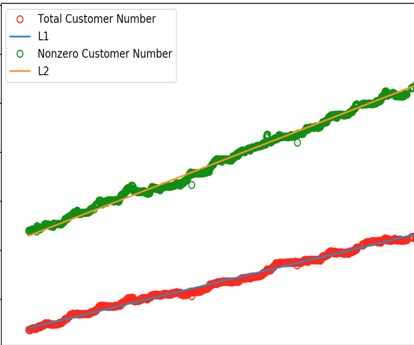
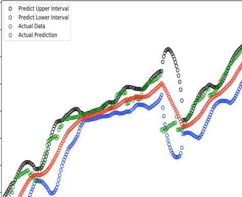
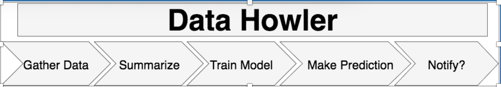
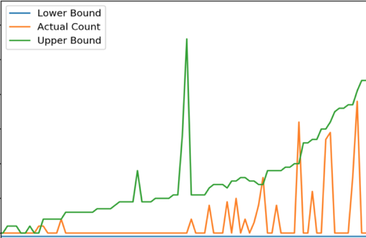

In the Industrial setting, I would like to work on cloud computings and the application of big data on it.
In summer 2018, I worked with
Oracle Corporations in Oracle Cloud Infrastructure.
I collected different metrics of the file systems and did predictions based on that.
Graph Demo
Due to NDA, the x-axis, y-axis value omitted


In summer 2017, I worked with
Cisco Systems on the Spark Alarming system in the data team in Richardson, TX as a software engineer intern.
I predicted how many counts of the logs should appear in a given interval and send notifications to engineers when it is rather far away from the normal interval.
Flow Chart(The name of the projects is HOWLER)

Prediction Result
Due to NDA policy, exact x, y axis number are omitted

Homepage
School Work
Side Projects
Go
Travel
Totally Different